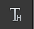
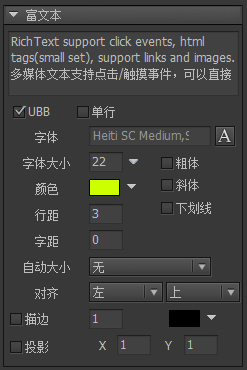

Guide

富文本
富文本与普通文本的区别在于：
- 普通文本不支持交互，鼠标/触摸感应是关闭的；富文本支持。
- 普通文本不支持链接和图文混排；富文本支持。
- 普通文本不支持html语法（但可以使用UBB实现不同样式）；富文本支持。
点击主工具栏中的按钮，生成一个富文本。
实例属性

文本设置文本内容。富文本可直接使用HTML语法。例如。注意，img标签需要使用“/>”结束，而不是“>”。当需要换行时，在编辑器里可以直接按回车，或者使用html标签“
”亦可。运行时需要换行可以用“\n”，尽量避免使用“\r\n”。字体设置文字使用的字体。你不需要每个文本设置一次字体。在项目属性里可以设置项目中所有文本默认使用的字体。运行时则通过UIConfig.defaultFont统一设置。如果某些文本确实需要指定特别的字体，可以点击右边的A按钮，选择其他字体，或者直接输入字体名称。如果需要使用位图字体，可以从资源库中把字体资源拖动到这里。字体大小设置文字使用的字号。如果使用的是位图字体，你需要对位图字体设置“允许动态改变字号”，这里的选项才有效。颜色设置文字颜色。如果使用的是位图字体，你需要对位图字体设置“允许动态改变颜色”，这里的选项才有效。行距每行的像素间距。字距每个字符的像素间距。自动大小自动宽度和高度文本不会自动换行，宽度和高度都增长到容纳全部文本。自动高度文本使用固定宽度排版，到达宽度后自动换行，高度增长到容纳全部文本。自动收缩文本使用固定宽度排版，到达宽度后文本自动缩小，使所有文本依然全部显示。如果内容宽度小于文本宽度，则不做任何处理。无文本使用固定宽度和高度排版，不会自动换行。超出文本框范围的被剪裁。（Laya、Egret、Unity平台没有开启此剪裁功能，也就是超出范围的依然会显示）
对齐设置文本的对齐。粗体设置文本为粗体。斜体设置文本为斜体。下划线设置文本为下划线。（Laya平台不支持下划线）单行设置文本为单行。单行文本不会自动换行，换行符也被忽略。描边设置文本的描边效果。描边效果在各个引擎实现方式不相同：- AS3/Starling 使用滤镜的方式实现；
- Egret/Laya 使用H5引擎自身提供的功能；
- Unity 使用额外的Mesh模拟描边效果。一般一个字符的Mesh含有4个顶点（两个三角形），使用描边效果后则增加到20个顶点（十个三角形）。
投影设置文本的投影效果。投影效果可以看做是简化的描边效果，描边是所有方向，投影只有一个方向。UBB设置文本支持UBB语法。关于UBB的说明，请参考普通文本里相关的描述。
GRichTextField
富文本支持动态创建，例如：
|
侦听富文本中链接点击的方法是：
|
富文本最重要的功能是支持HTML解析和渲染。普通的文本样式标签，例如FONT、B、I、U这些一般都能很好的支持。其他一些对象标签，例如A、IMG等在各个引擎中支持的力度有所不同：
AS3/Starling支持A标签和IMG标签，支持混排UI库里的图片/动画和外部图片。支持定制超级链接的样式：
|
Egret支持A标签。不支持图文混排。Laya支持A标签和IMG标签，只支持混排外部图片，不支持UI库里的图片和动画。Laya版本的GRichTextField的实质是包装了Laya的HTMLDivElement，可以通过以下方式访问：
|
Unity支持A、IMG、INPUT、SELECT，P等。请参考这里
HTML语法
Unity版本对HTML解析有比较完整的支持。
IMG支持混排UI库里的图片/动画和外部图片。加载外部图片的能力由自定义Loader提供。例如：
|
A显示一个超级链接。例如：
|
支持定义超级链接的样式。如果是全局修改，可以使用HtmlParseOptions的静态属性，例如：
|
如果你只想定义单个富文本的链接样式，那么可以这样：
|
INPUT支持显示以下语法：
|
如果需要显示按钮，需要先定义按钮对应的资源，否则无法显示。例如：
|
对于输入框，可以定义输入框的边框颜色和边框大小，例如：
|
SELECT是使用该标签可以显示一个下拉选择框。例如：
|
在使用下拉框前，需要先定义下拉框对应的资源，否则无法显示。例如：
|
P例如显示一张居中的图片：
|
默认情况下，GRichTextField将文本当做HTML片段处理，即对于空格、回车等空白字符是保留的。如果你希望当做完整的HTML处理，不保留空白，可以用以下几种方式：
- 使用HtmlParseOptions：
|
- 将文本内容使用HTML或BODY标签包裹，例如：
|
如果要访问HTML中的对象，可以使用以下的方式：
|
又例如，如果要制作鼠标移到链接上显示信息的效果：
|
你也可以扩展实现自己的IHtmlObject。你需要自己实现一个IHtmlPageContext接口，然后赋值给RichTextField的htmlPageContext属性。详细可阅读源码。